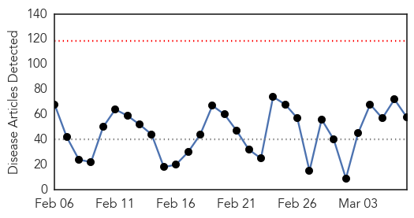
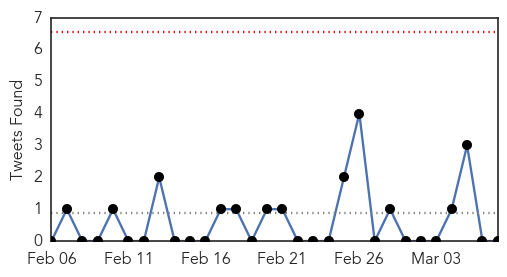
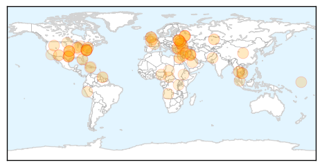
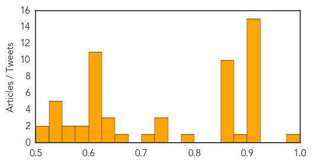

Toggle navigation
Early Warning
Daily Alerts
Unknown
Mar 07, 2014
Compare to:
-
Dengue Fever
Hemmorhagic Fever
Mold/Fungal Infection
Influenza
Meningitis
Pertussis / Whooping Cough
Middle East Respiratory Syndrome
Cholera
Hepatitis
Chikungunya
Yellow Fever
Bubonic Plague
West Nile Virus
Swine Flu
Ebola
Measles
Mumps
30 Day Trends
Web: 0
alerts
, 0
warnings
Twitter: 0
alerts
, 0
warnings
Top Articles:
Showing top 50 articles...
0.977
Cambodia Sets up Bird Flu Control Zones
0.917
Chicago Tribune
0.917
Chicago Tribune
0.917
Chicago Tribune
0.917
Chicago Tribune
0.917
Chicago Tribune
0.917
Chicago Tribune
0.917
Chicago Tribune
0.917
Chicago Tribune
0.917
Chicago Tribune
0.917
Chicago Tribune
0.917
Chicago Tribune
0.917
Chicago Tribune
0.917
Chicago Tribune
0.917
Chicago Tribune
0.910
The world windows to Thailand
0.884
Guyana records big decrease in malaria cases
0.866
Obama phoned Merkel on Friday to discuss Ukraine situation -White House
0.866
Kremlin ridicules calls for Russia-Ukraine talks with Western mediation
0.866
OSCE says observers again blocked from Crimea
0.866
Ukrainian officials committed to reforms, IMF says
0.866
Ukraine withdraws cadets from Russian military academies
0.866
Russia rebukes NATO for curbing cooperation over Ukraine
0.866
Assembly speaker says will support Crimea if it decides to join Russia-RIA
0.866
Kazakhstan seeks $737 mln from Kashagan group for ecological damage
0.866
Obama, Japan's Abe agree Russia moves in Ukraine threaten world peace
0.859
Many U.S. children prescribed antibiotics needlessly, get infection
0.780
Climate Change Could Increase Malaria Presence in Africa and South America
0.745
Camden woman recovering from meningococcal disease
0.737
Idaho Restricts Pig Movements
0.728
NY Chinatowns' seafood markets source of infection: health dept.
0.723
Alzheimers may be third leading cause of death in America
0.674
Superbug kills 16 people in Manchester NHS hospital trust
0.646
Medical board formed for treatment of poet Shujaabadi
0.642
OCHA Flash Update 2 - Marshall Islands & Kiribati
0.632
Global Warming Tied to Spike in Malaria Cases
0.611
Hospital food safety measures reduce risk of contaminated hospital food
0.607
Malaria cases spread to higher elevations
0.601
Malaysia Airlines searches for lost plane carrying 239 people
0.601
Tense standoff reported at Crimean military post
0.601
Turkish president rejects PM's bid to ban Facebook, YouTube
0.601
Saudi Arabia lists Muslim Brotherhood as terrorist group
0.601
Russia hits back over US sanctions warning
0.601
Nigeria court flogs four men for homosexuality
0.601
Malaysian court jails opposition leader for sodomy
0.601
French court convicts three ‘would-be-jihadists’
0.601
Penetrating the remotest areas of Haiti to eliminate maternal and newborn tetanus - Haiti
0.597
Pigs transported into North Dakota require health certificate
0.579
Flu jab benefits Type 2 diabetes sufferers
0.564
Continuing deep concern for civilians - Central African Republic
Top Tweets:
No tweets found for Mar 07, 2014
Web/News Articles

Tweets

Article Locations

Article Confidences
